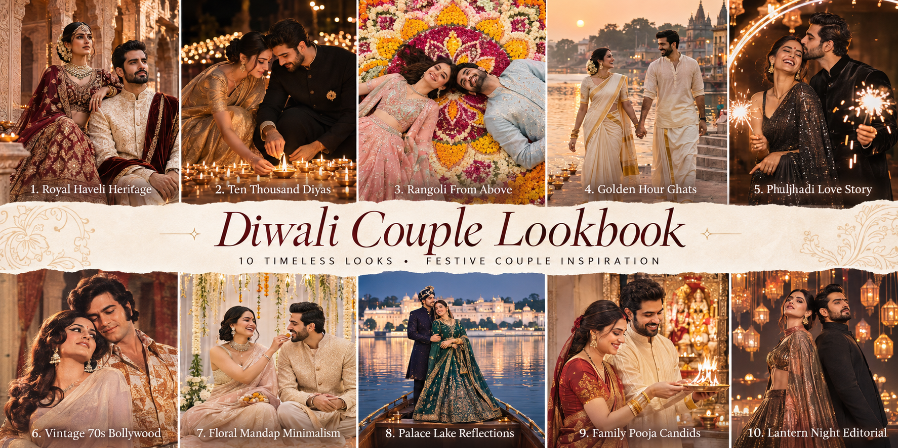

30 festive portrait styles. Pick one, copy the prompt, upload your couple photo to your AI image tool, and get a celebrity-style Diwali portrait.

Your prompt will appear here.
Pick a style and copy the prompt. The Identity Lock and things-to-avoid list are already included.
Upload one clear photo of each person (or a clear couple photo) to your AI image tool.
Paste the prompt. Check the faces at full size, and regenerate if either person looks different.
| Reference photos | One clear photo of each person |
|---|---|
| Face visibility | Front-facing or 3/4 angle |
| Output ratio | 4:5 for portraits |
| Image quality | Highest available |
| Style | Photorealistic editorial |
| Face reference | Highest available priority |
| Variations | Generate 2–4 per look |